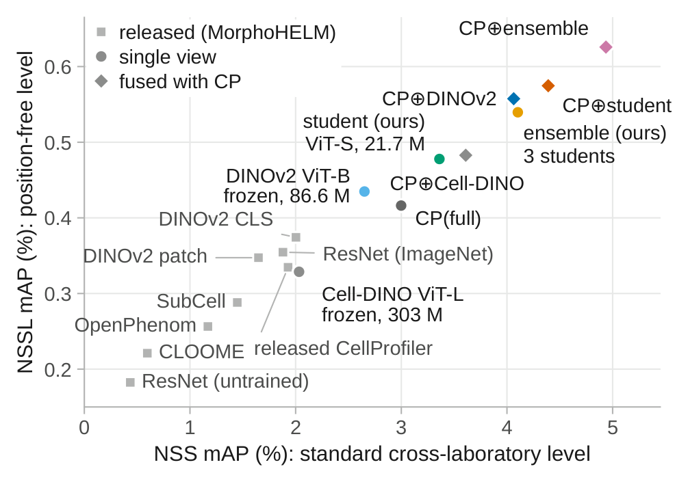
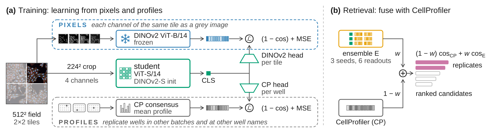
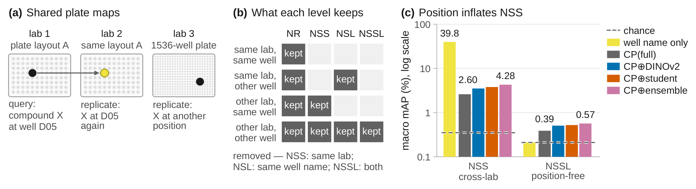
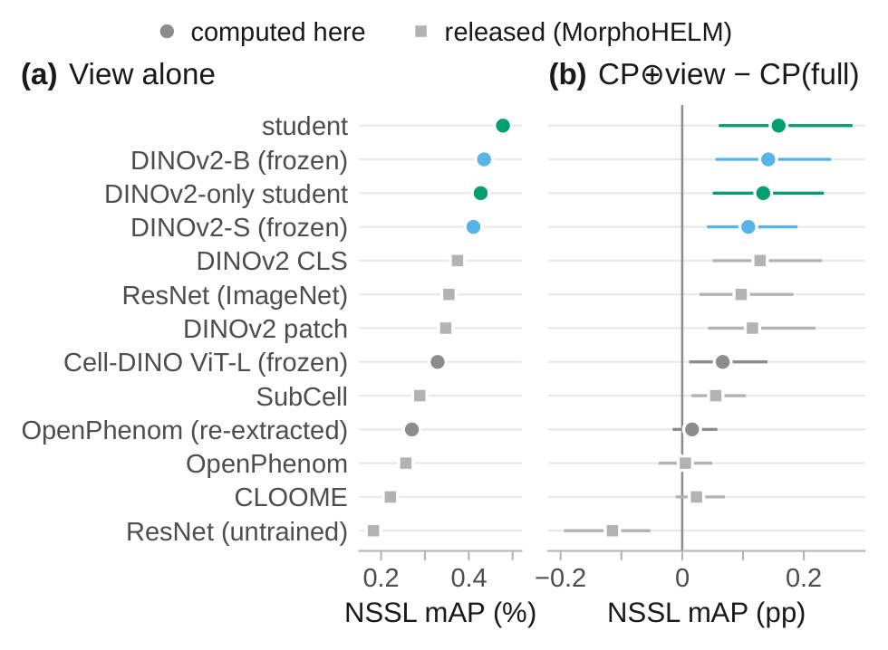
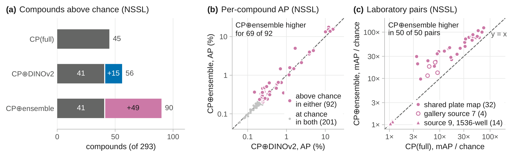

Research · 2026 Under review
Learning from Pixels and Profiles Dual-Teacher Distillation for Cross-Laboratory Cell Painting Retrieval
1Electrical and Computer Engineering ·
2Pharmacology ·
3Chemistry & Biochemistry
University of California San Diego
TL;DR For cross-laboratory Cell Painting retrieval, what an image model is taught matters more than its size. A small ViT-S student, taught by CellProfiler consensus profiles and frozen DINOv2 features, beats much larger frozen models — and errs differently from CellProfiler, so fusing the two beats either alone.

Motivation
The standard test of a Cell Painting representation is whether a perturbation imaged in one laboratory retrieves its replicates imaged in another. On this test, hand-engineered CellProfiler (CP) features still outperform frozen foundation models, including models trained on Cell Painting images.
Making the model bigger does not close the gap: channel-wise DINOv2 scores 2.32 % mAP as ViT-S and 2.33 % as ViT-B. So instead of asking how large an image model should be, we ask what it should be taught.
Method: distill, then fuse
We teach the student what CellProfiler measures while keeping what a vision foundation model sees. A ViT-S/14 initialised from DINOv2-S reads four-channel crops and learns from two teachers of different modality; at test time it is late-fused with CP.

Profile teacher
The CP consensus of the well's compound, averaged over replicates in other batches and at other well names — so it carries the compound's morphology, not the well's batch or position.
Pixel teacher
Frozen channel-wise DINOv2 ViT-B/14 features of the same tile. They hold the student near its pretrained features; with the CP target alone it falls below its initialisation.
Fusion with CP
Because the student reads pixels instead of CP's segmentation, it approaches CP's signal while making different errors — which late fusion turns into a gain.
When does a second view help? A two-view signal-detection model says a view adds to CP whenever its error correlation with CP is below the ratio of their separations. For the student, ρ ≈ 0.19–0.20 against d₂/d₁ ≈ 0.95, predicting an optimal fusion weight w* = 0.49 — the observed optimum is 0.4–0.5.
Evaluation without the position shortcut
JUMP reuses plate layouts across laboratories: 89.8 % of cross-laboratory replicate pairs on 384-well plates share a well. A baseline that knows only the well name — nothing about cells — reaches 39.8 % mAP at the standard level, against 2.6 % for CellProfiler. We therefore report every result also with same-well candidates excluded (NSL, NSSL) and read these position-free levels as decisive.

Results
On five JUMP laboratories held out from training and selection, the student outperforms its image teacher and the 14× larger microscopy model Cell-DINO at every level. Fused with CP, it improves on CP in every setting tested; the three-student ensemble fused with CP is best overall. Every design was fixed on development laboratories and scored once.
| cpg-target2 · macro mAP (%) | NSS | NSL | NSSL |
|---|---|---|---|
| chance | 0.35 | 0.20 | 0.21 |
| CP(full) | 2.60 | 0.42 | 0.39 |
| DINOv2 (frozen ViT-B, 86.6 M) | 2.33 | 0.39 | 0.41 |
| Cell-DINO (frozen ViT-L, 303 M) | 1.78 | 0.33 | 0.32 |
| student (ViT-S, 21.7 M)ours | 2.95 | 0.44 | 0.45 |
| CP ⊕ DINOv2 | 3.51 | 0.46 | 0.51 |
| CP ⊕ studentours | 3.79 | 0.48 | 0.52 |
| ensemble (3 students)ours | 3.62 | 0.49 | 0.51 |
| CP ⊕ ensembleours | 4.28 | 0.52 | 0.57 |
NSS: query's laboratory removed (standard level). NSL / NSSL: same-well candidates also excluded (position-free).


Citation
@misc{kim2026pixels,
title = {Learning from Pixels and Profiles: Dual-Teacher
Distillation for Cross-Laboratory Cell Painting Retrieval},
author = {Kim, Wonmin and Sch{\"o}neberg, Johannes},
year = {2026}
}